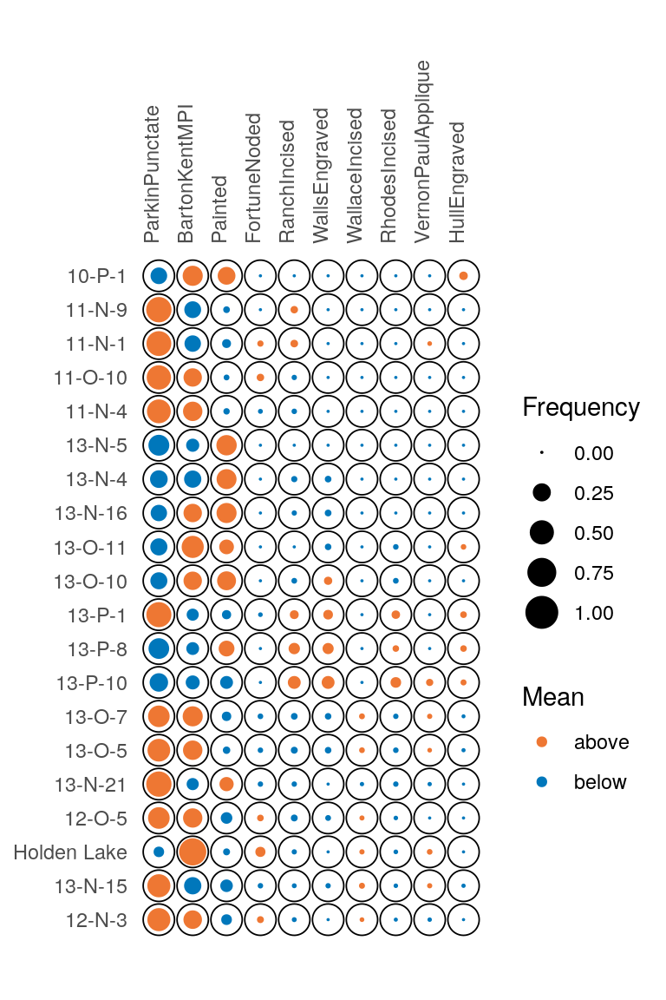
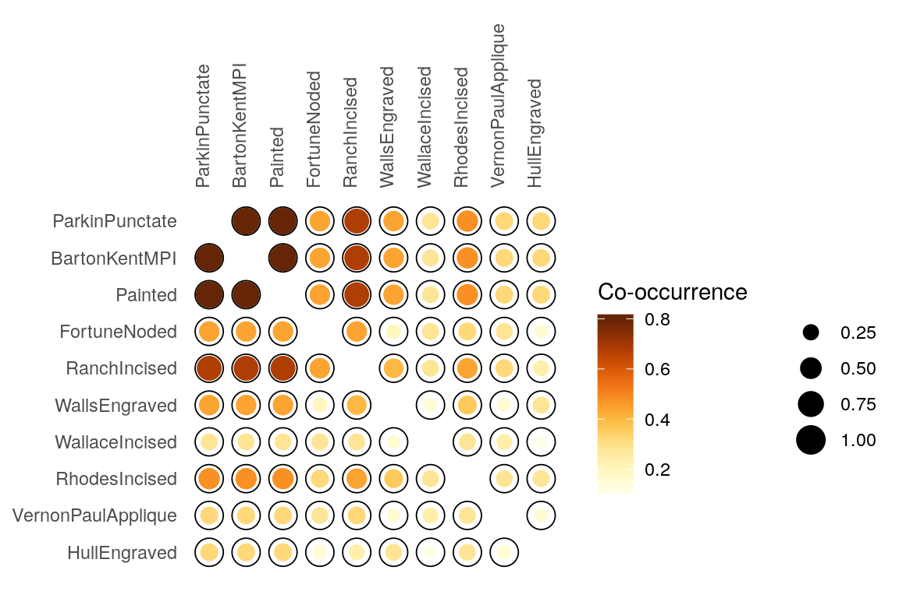

Definitions
tabula provides a set of S4 classes that extend the matrix data type from R base. These new classes represent different special types of matrix.
- Abundance matrix:
-
CountMatrixrepresents count data, -
FrequencyMatrixrepresents relative frequency data.
-
- Logical matrix:
-
IncidenceMatrixrepresents presence/absence data.
-
- Numeric matrix:
-
OccurrenceMatrixrepresents a co-occurence matrix. -
SimilarityMatrixrepresents a (dis)similarity matrix.
-
It assumes that you keep your data tidy: each variable (taxon/type) must be saved in its own column and each observation (sample/case) must be saved in its own row. Missing values are not allowed.
Abundance matix
Count matrix
We denote the \(m \times p\) count matrix by \(A = \left[ a_{ij} \right] ~\forall i \in \left[ 1,m \right], j \in \left[ 1,p \right]\) with row and column sums:
\[\begin{align} a_{i \cdot} = \sum_{j = 1}^{p} a_{ij} && a_{\cdot j} = \sum_{i = 1}^{m} a_{ij} && a_{\cdot \cdot} = \sum_{i = 1}^{m} \sum_{j = 1}^{p} a_{ij} && \forall a_{ij} \in \mathbb{N} \end{align}\]
Frequency matrix
A frequency matrix represents relative abundances.
We denote the \(m \times p\) frequency matrix by \(B = \left[ b_{ij} \right] ~\forall i \in \left[ 1,m \right], j \in \left[ 1,p \right]\) with row and column sums:
\[\begin{align} b_{i \cdot} = \sum_{j = 1}^{p} b_{ij} = 1 && b_{\cdot j} = \sum_{i = 1}^{m} b_{ij} && b_{\cdot \cdot} = \sum_{i = 1}^{m} \sum_{j = 1}^{p} b_{ij} && \forall b_{ij} \in \left[ 0,1 \right] \end{align}\]
Logical matrix
Incidence matrix
We denote the \(m \times p\) incidence matrix by \(C = \left[ c_{ij} \right] ~\forall i \in \left[ 1,m \right], j \in \left[ 1,p \right]\) with row and column sums:
\[\begin{align} c_{i \cdot} = \sum_{j = 1}^{p} c_{ij} && c_{\cdot j} = \sum_{i = 1}^{m} c_{ij} && c_{\cdot \cdot} = \sum_{i = 1}^{m} \sum_{j = 1}^{p} c_{ij} && \forall c_{ij} \in \lbrace 0,1 \rbrace \end{align}\]
Numeric matrix
Co-occurrence matrix
A co-occurrence matrix is a symetric matrix with zeros on its main diagonal, which works out how many times (expressed in percent) each pairs of taxa occur together in at least one sample.
The \(p \times p\) co-occurrence matrix \(D = \left[ d_{i,j} \right] ~\forall i,j \in \left[ 1,p \right]\) is defined over an \(m \times p\) abundance matrix \(A = \left[ a_{x,y} \right] ~\forall x \in \left[ 1,m \right], y \in \left[ 1,p \right]\) as:
\[ d_{i,j} = \sum_{x = 1}^{m} \bigcap_{y = i}^{j} a_{xy} \]
with row and column sums:
\[\begin{align} d_{i \cdot} = \sum_{j \geqslant i}^{p} d_{ij} && d_{\cdot j} = \sum_{i \leqslant j}^{p} d_{ij} && d_{\cdot \cdot} = \sum_{i = 1}^{p} \sum_{j \geqslant i}^{p} d_{ij} && \forall d_{ij} \in \mathbb{N} \end{align}\]
Usage
Create
These new classes are of simple use, on the same way as the base matrix:
set.seed(12345)
# Create a count data matrix
CountMatrix(data = sample(0:10, 100, TRUE),
nrow = 10, ncol = 10)
#> 10 x 10 count data matrix:
#> V1 V2 V3 V4 V5 V6 V7 V8 V9 V10
#> 1 7 0 4 8 8 10 8 7 9 10
#> 2 9 1 3 0 4 9 2 5 5 8
#> 3 8 8 10 2 10 3 10 4 0 0
#> 4 9 0 7 7 8 2 8 3 0 6
#> 5 5 4 7 4 2 8 10 0 1 7
#> 6 1 5 4 3 3 5 2 6 3 5
#> 7 3 4 7 9 0 8 10 10 9 7
#> 8 5 4 5 9 0 0 1 7 5 8
#> 9 8 1 2 6 0 4 6 5 8 1
#> 10 10 10 5 1 6 2 10 1 0 4
# Create an incidence (presence/absence) matrix
# Numeric values are coerced to logical as by as.logical
IncidenceMatrix(data = sample(0:1, 100, TRUE),
nrow = 10, ncol = 10)
#> 10 x 10 presence/absence data matrix:
#> V1 V2 V3 V4 V5 V6 V7 V8 V9 V10
#> 1 FALSE TRUE TRUE FALSE TRUE TRUE TRUE TRUE FALSE TRUE
#> 2 TRUE FALSE TRUE TRUE TRUE TRUE TRUE FALSE FALSE TRUE
#> 3 TRUE TRUE FALSE TRUE FALSE TRUE TRUE TRUE FALSE FALSE
#> 4 TRUE FALSE TRUE TRUE TRUE FALSE TRUE FALSE FALSE FALSE
#> 5 TRUE TRUE TRUE TRUE FALSE FALSE FALSE FALSE TRUE TRUE
#> 6 TRUE TRUE TRUE TRUE TRUE TRUE FALSE TRUE TRUE FALSE
#> 7 TRUE TRUE TRUE TRUE TRUE TRUE TRUE TRUE FALSE FALSE
#> 8 TRUE TRUE FALSE FALSE FALSE FALSE FALSE TRUE TRUE TRUE
#> 9 FALSE FALSE FALSE FALSE TRUE TRUE TRUE TRUE FALSE FALSE
#> 10 FALSE FALSE TRUE TRUE FALSE TRUE FALSE TRUE FALSE FALSENote that a FrequencyMatrix can only be created by coercion from a CountMatrix to ensure data integrity (see below).
Coerce
tabula uses coercing mechanisms (with validation methods) for data type conversions:
# Create a count matrix
# Numeric values are coerced to integer and hence truncated towards zero
set.seed(12345)
A1 <- CountMatrix(data = sample(0:10, 100, TRUE),
nrow = 10, ncol = 10)
# Coerce counts to frequencies
B <- as(A1, "FrequencyMatrix")
# Row sums are internally stored before coercing to a frequency matrix
totals(B)
#> 1 2 3 4 5 6 7 8 9 10
#> 71 46 55 50 48 37 67 44 41 49
# This allows to restore the source data
A2 <- as(B, "CountMatrix")
all(A1 == A2)
#> [1] TRUE
# Coerce to presence/absence
C <- as(A1, "IncidenceMatrix")
# Coerce to a co-occurrence matrix
D <- as(A1, "OccurrenceMatrix")Visualization
Several types of graphs are available in tabula which uses ggplot2 for plotting informations. This makes it easy to customize diagramms (e.g. using themes and scales).
Spot plot
Spot matrix allows direct examination of data (above/below some threshold):
# Plot frequencies with the column means as a threshold
mississippi_counts <- as(mississippi, "CountMatrix")
plotSpot(mississippi_counts, threshold = mean) +
ggplot2::labs(size = "Frequency", colour = "Mean") +
khroma::scale_colour_vibrant()
# Plot co-occurence of types
# (i.e. how many times (percent) each pairs of taxa occur together
# in at least one sample.)
mississippi_occ <- as(mississippi, "OccurrenceMatrix")
plotSpot(mississippi_occ) +
ggplot2::labs(size = "", colour = "Co-occurrence") +
ggplot2::theme(legend.box = "horizontal") +
khroma::scale_colour_YlOrBr()
Matrix plot
Abundance matrix can be displayed as a heatmap of relative abundances (frequency), or as percentages of the independence value (in french, “pourcentages de valeur d’indépendance”, PVI).
# Reproduce B. Desachy's matrigraphe
boves_counts <- as(boves, "CountMatrix")
plotMatrix(boves_counts) +
ggplot2::theme_light() +
khroma::scale_fill_YlOrBr()
PVI is calculated for each cell as the percentage to the column theoretical independence value: PVI greater than \(1\) represent positive deviations from the independance, whereas PVI smaller than \(1\) represent negative deviations (Desachy 2004). The PVI matrix allows to explore deviations from independence (an intuitive graphical approach to \(\chi^2\)), in such a way that a high-contrast matrix has quite significant deviations, with a low risk of being due to randomness (Desachy 2004).
# Reproduce B. Desachy's matrigraphe
plotMatrix(boves_counts, PVI = TRUE) +
ggplot2::scale_fill_gradient2(midpoint = 1) +
ggplot2::theme_bw()
Bar plot
Bertin (1977) or Ford (1962) (battleship curve) diagramms can also be plotted, with statistic threshold.
plotBar(boves_counts, center = FALSE, horizontal = FALSE) +
ggplot2::labs(title = "Ford diagram") +
ggplot2::theme_bw()
plotBar(boves_counts, center = TRUE, horizontal = FALSE) +
ggplot2::labs(title = "Bertin diagram") +
ggplot2::theme_light()
The positive difference from the column mean percentage (in french “écart positif au pourcentage moyen”, EPPM) represents a deviation from the situation of statistical independence (Desachy 2004). As independence can be interpreted as the absence of relationships between types and the chronological order of the assemblages, EPPM is a usefull graphical tool to explore significance of relationship between rows and columns related to seriation (Desachy 2004).
# Reproduce B. Desachy's sériographe
plotBar(boves_counts, EPPM = TRUE) +
khroma::scale_fill_bright()
References
Bertin, Jacques. 1977. La graphique et le traitement graphique de l’information. Nouvelle Bibliothèque Scientifique. Paris: Flammarion.
Desachy, Bruno. 2004. “Le sériographe EPPM : un outil informatisé de sériation graphique pour tableaux de comptages.” Revue archéologique de Picardie 3 (1): 39–56. https://doi.org/10.3406/pica.2004.2396.
Ford, J. A. 1962. A Quantitative Method for Deriving Cultural Chronology. Technical Manual 1. Washington, DC: Pan American Union.